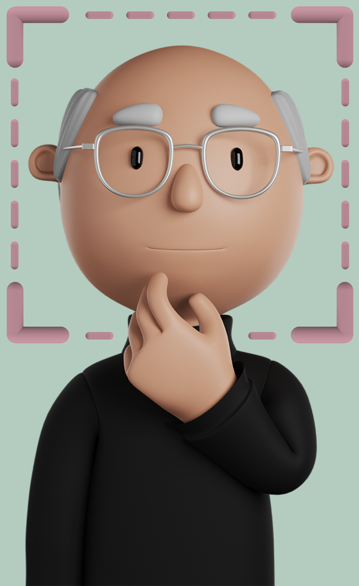

The EZ-MMLA ToolkitA data collection website that provides educators and researchers with easy access to multimodal data streams. |
 |
✏️ Overview
I am working with a group of researchers at the Learning, Innovation, and Technology lab based at the Harvard Graduate School of Education to develop a multimodal data collection website. The website uses state-of-the-art machine learning algorithms to collect data on students’ body posture, hand gestures, attention, emotions, and physiological states. The application is currently being used by 100+ Harvard graduate students enrolled in a Multimodal Analytics course.
üë©ü誂Äçüíª My Role
I am the team lead for this project. I researched the most effective models to use in the application, developed the frontend for the majority of tools currently available on the website, architected and developed the backend, and deployed the application. I also provided technical guidance and mentorship to team members.
üîé Background
Data has proven valuable in understanding student learning processes and uncovering factors that most affect learning outcomes. Recently, educational researchers have become more interested in new tools for capturing detailed learning trajectories, which has led to the creation of a new methodology: Multimodal Learning Analytics (MMLA), involving the computational analysis of multimodal data. Generally, MMLA research focuses on using high-frequency sensors and wearable tracking devices, such as eye-trackers (e.g., Tobii eye-trackers) and motion sensors (e.g., Microsoft Kinect), to capture rich physiological and behavioral student data.
üö© The Problem
While MMLA is a promising field, it is not a widely used methodology in practice because of the specialized equipment and technical knowledge required to collect, process, and analyze multimodal datasets. Multimodal data collection, in particular, involves the use of a combination of physical sensors, proprietary tools, and external contractors, which pose the following challenges:
-
üí∞ Affordability
Current sensor hardware is generally not affordable by researchers and teachers. This restricts multimodal data research to well-funded teams or more commercially lucrative research areas.
-
üîí Accessibility
The high-effort and logistically challenging processes of data collection and analysis restrict access to users with a strong technical background.
-
üë§ Participant Effects
Physical sensors can be invasive for participants and lead to Hawthorne effects and similar biases entering data.
-
❗ Limited research potential
The complexity and cost of the data collection process make it difficult to develop a system of frequent assessment and feedback, which is an essential process in education.
üéØ The Goal
Our goal is to democratize multimodal data collection using advanced machine learning algorithms behind a user-friendly interface. We want to design a more intuitive, low-cost, and ethical solution compared to traditionally used physical sensor technologies.
üß© Our Solution
We developed the EZ-MMLA toolkit, which is a website for collecting multimodal data via video and audio input captured either in real-time or uploaded for post-processing. It is free to use and open to the public, so it can be used by all educational practitioners and researchers to collect multimodal student data. The types of data currently collected through the website are:
- Body posture (skeletal data),
- Hand gestures,
- Attention (eye-tracking),
- Emotions,
- Physiological states (heart rate), and
- Lower-level computer vision algorithms (fiducial and color tracking).
The EZ-MMLA Toolkit website has been designed with a user-friendly interface that does not require any pre-requisite technical knowledge. On the home page, users can select from an index of data-collection tools that correspond to a multimodal data type. When a user selects a tool, they are directed to a page where they can execute data collection in real-time through a webcam/microphone feed or upload a recording. Once the tracking is complete, the user is prompted to download the data as a CSV file.
Comparing the EZ-MMLA toolkit with traditional data collection tools
While computer-vision algorithms provide us with new ways of capturing multimodal data, they are not interchangeable with physical sensors. Generally, webcam-based data collection tools tend to be less accurate than dedicated sensors, but they are easier to access, distribute, setup, and use. They have also been steadily improving, as consumer hardware is becoming faster, higher resolution, and more affordable.
✍️ User Feedback
There are several sources of user feedback that were collected during the semester. One source is anonymous weekly survey data from students: one question asked students to describe an aspect of class they enjoyed that week, the second was an aspect of
class they felt needed improvement, and the third prompted students to report their experiences using the EZ-MMLA toolkit. Additionally, we included a usability instrument in the survey. Students were also prompted to give their feedback
during class, sometimes orally and sometimes in a chat room.
A total of 504 open-ended response sets were collected over the course of 12 weeks, and 82 open-ended comments were identified as being relevant to the EZ-MMLA toolkit. We conducted thematic analysis on the data to identify key themes.
Taking an inductive approach, preliminary codes were assigned to the data, which were then iteratively organized into two main themes (positive, negative) and several sub-themes on how students found the experience, shown briefly in the
table below.
| Theme | Examples |
| Authenticity | “I liked that it was grounded in something real-world and relevant to the class” |
| Accessibility | “The fact that we got to actually use the Emotion Detecting tool and analyze it this week far exceeded my expectations in terms of what is possible to do as a student in our 3rd week of class!” |
| Technical Issues | “The eye tracking data collection website tend to make my laptop run slowly.” |
| Learning Curve | “When I was collecting eye-gaze data from gazecloud, it took me several tries to figure out how I can both read and let gazecloud track my eyes.” |
| Data Quality | “I wish I was made more cognizant of how [the] quality [of] the data being collected is as I was being recorded (because I forgot a lot of the time). If there was a camera to show us how the camera is detecting our position, I might change my behaviors so that I have my webcam screen on/not be leaning back out of view” |
Usability. To assess the usability of the website, we used Brooke’s “quick and dirty” System Usability Scale (SUS) which comprises 10 questions that users rate on a 5 point scale from “Strongly Disagree” to “Strongly Agree”.
Questions for example included “I found the system unnecessarily complex” or “I would imagine that most people would learn to use this system very quickly”. The final score is between 0 and 100, representing 7 levels from worst to best.
29 students completed the SUS instrument. The final score of the EZ-MMLA website is 71.94 (SD = 14.84). The lowest scoring question was “I found the website unnecessarily complex” (mean = 3.6), which suggests that the website could be simplified
from a user’s standpoint.
Authenticity. Students seemed to appreciate that the data collected by the toolkit was, in the words of one student, “massive datasets that are generated by real MMLA tools.” Students were motivated that the data was authentic,
and were also able to get their hands dirty in data analytics — one student noted that “the opportunity to work with data collection directly…helps me to understand [the] limitations of data.” This perceived authenticity presents an opportunity
for the EZ-MMLA toolkit in data science education; it is well known that authentic problems that are directly related to students foster engagement, motivation and deep understanding.
Accessibility. Several students noted that the functionalities and data collected by the toolkit were intuitive to access and understand, despite their lack of prior expertise. One student stated that the activity using
the emotion detection functionality of the toolkit “far exceeded my expectations in terms of what is possible to do as a student in our 3rd week of class”, and another felt the tool was “simple and straightforward to use”.
Technical issues. The most prominent negative theme that emerged, on the other hand, was the frustration caused by technical issues. The most common issue was the website simply being slow and laggy for some students. A
few reported that their laptops were running slower than usual when running the toolkit. The downloading function also caused some trouble, where webcam data could only be accessed by one application at a time.
Steep learning curve. While some functionalities felt intuitive and accessible for some students, other functions felt difficult to grasp for others. Some students reported re-attempting data collection a few times before
getting it right, and asked questions such as, “how can we check if data is being correctly collected?” Some students explicitly asked for examples and additional documentation. For instance, on collecting data for skeletal tracking, one
comment was “I wish we knew an average number of frames that should be collected”.
Data quality. A few comments pointed out the limitations of the data collected by the toolkit. One type of limitation arose from the unique context of students being privy to the exact setup and inner workings of the subject
when working with their own data. This included concerns about how they had been conscious of the sensors and modeled their behavior to get ‘good’ data, or how they were concerned about the data being inaccurate because they were using a
dual monitor setup, or had repeated the same experiment a few times before collecting the final dataset.
üí° Conclusion
In summary, this project finds that the results from the preliminary examination are encouraging. The platform has been broadly successful and indicative of how the proposed web-based approach might be viewed as a viable new medium for MMLA. Importantly, our findings suggest that there is the potential to overturn the conventional MMLA pipeline and democratize learning research.